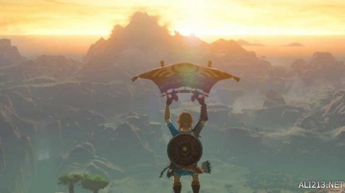

塞尔达传说荒野之息游戏中滑翔翼在跑图中非常重要，那么塞尔达传说荒野之息滑翔翼怎么获得？怎么用？小编这里给大家带来了“yyzxc711114”分享的塞尔达传说荒野之息滑翔翼获得及用法技巧，一起来看看吧。

滑翔翼获得方法
完成初始地图的四个迷宫后，在老教堂神之殿找国王老头那里可以获得滑翔翼。
滑翔翼使用技巧
在高处按 X 跳起，再按一次 X 即可进入滑翔状态。
塞尔达传说荒野之息滑翔翼获得及用法技巧就给大家介绍到此，希望可以帮到大家，祝大家顺利通关!